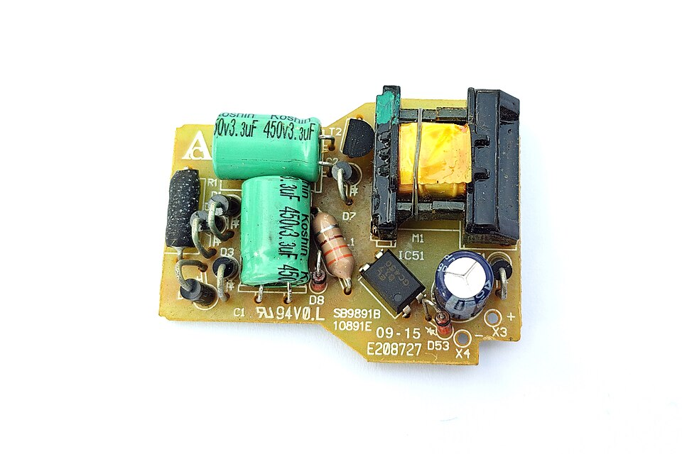
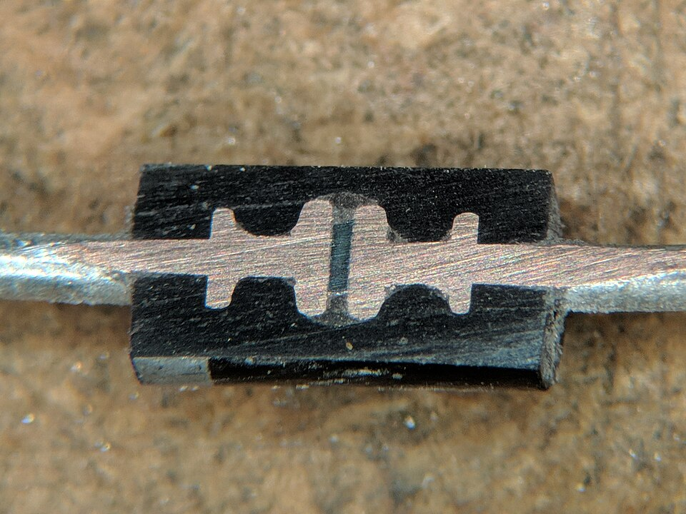
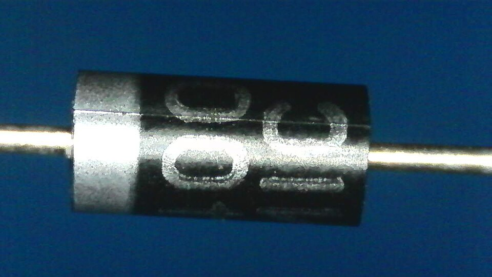
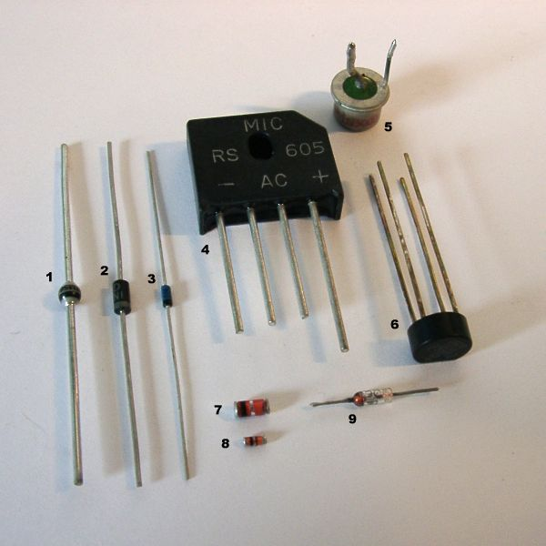
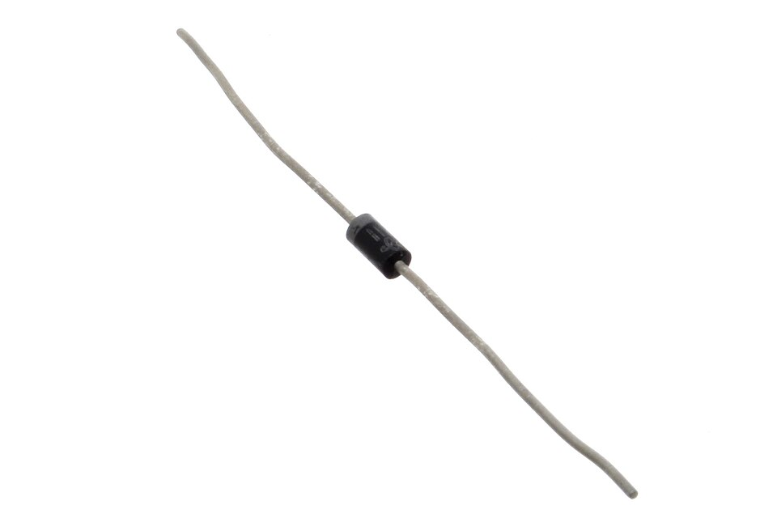
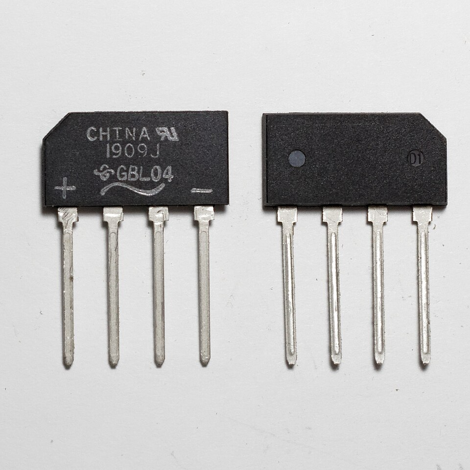
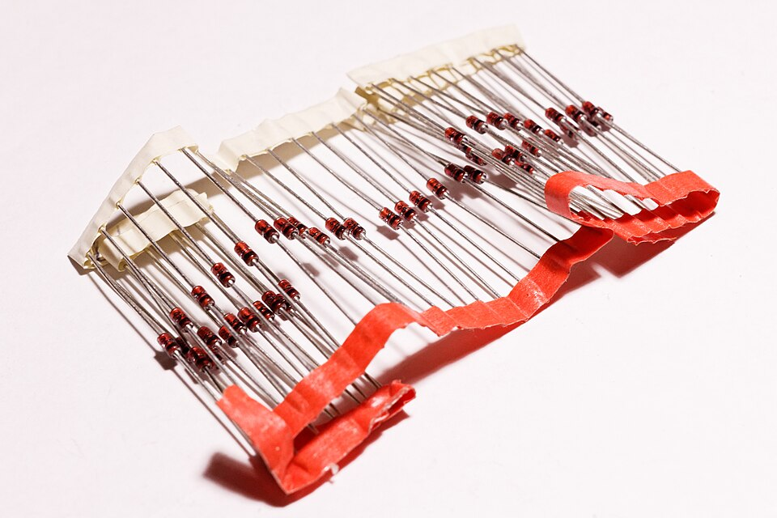
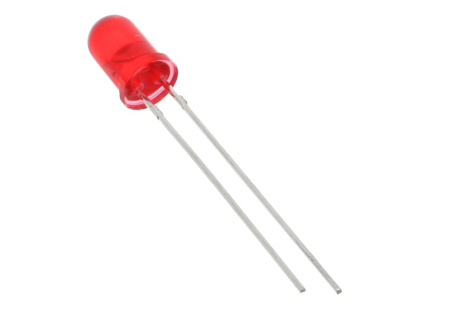

สารกึ่งตัวนำ ไดโอด
และสัญลักษณ์
อิเล็กทรอนิกส์
อุปกรณ์และวงจรอิเล็กทรอนิกส์ (Devices and Electronic Circuits)
20127-2004
สาขาเมคคาทรอนิกส์
และหุ่นยนต์
ท 1 · ป 3
4 ชม./สัปดาห์
2 หน่วยกิต · 72 ชม.
ทุกสัปดาห์
ใบความรู้ 1 ชม.
+ ใบงาน 3 ชม.
เป้าหมาย: อ่านแบบ ต่อวงจร วัดทดสอบ อุปกรณ์อิเล็กทรอนิกส์ สร้างแผ่นวงจรพิมพ์ และอ่านคู่มืออุปกรณ์
7 หน่วย → ชิ้นงานจริง 1 ชิ้น
| สัปดาห์ | หน่วยการเรียนรู้ |
|---|---|
| 1–2 | 1 วัดและทดสอบไดโอด |
| 3–5 | 2 วงจรแหล่งจ่ายไฟฟ้า |
| 6–8 | 3 ทรานซิสเตอร์และวงจรขยาย |
| 9–10 | 4 ไทริสเตอร์และอุปกรณ์ทางแสง |
| 11–13 | 5 วงจรกำเนิดสัญญาณ ตั้งเวลา |
| 14–15 | 6 ทำแผ่นวงจรพิมพ์ |
| 16–17 | 7 ประกอบและทดสอบวงจร |
| 18 | ประเมินผลลัพธ์รายวิชา |
ชิ้นงานปลายภาค
วงจรตั้งเวลาขับรีเลย์
บนแผ่นวงจรพิมพ์ที่ทำเอง
ใช้แหล่งจ่าย + วงจรขับรีเลย์ + วงจรตั้งเวลา ที่ฝึกระหว่างภาค
คะแนนมาจากไหน?
น้ำหนักคะแนนรายวิชา
- หน่วยที่ 1–7 หน่วยละ 10%
- ประเมินผลลัพธ์รายวิชา (สัปดาห์ 18) 30%
เกณฑ์ผ่านหน่วยที่ 1 (80%)
- ใบงานละ 16 / 20
- แบบทดสอบ 16 / 20
- พฤติกรรม 12 / 15
4 ชั่วโมง ลงมือทำมากกว่านั่งฟัง
| เวลา | กิจกรรม | นักเรียนทำอะไร |
|---|---|---|
| 0:00–0:15 | เปิดเรื่อง | 🙋 ค้นหาไดโอดบนแผงวงจรจริง |
| 0:15–0:30 | แบบทดสอบก่อนเรียน | 📱 ทำ 20 ข้อบนมือถือ |
| 0:30–1:15 | 5.1–5.2 สารกึ่งตัวนำ รอยต่อพีเอ็น | 🙋 ผลึกมนุษย์ · รอยต่อมนุษย์ · โหวต · ฝึกคำนวณ |
| 1:15–1:25 | พัก | ☕ |
| 1:25–1:55 | 5.3–5.4 ชนิดไดโอด สัญลักษณ์ | 🙋 ล่าไดโอด · เกมทายสัญลักษณ์ · นักสืบแบบวงจร |
| 1:55–3:10 | ใบงานที่ 1.1 | 🛠️ จำแนกไดโอดจริง อ่านแบบวงจร |
| 3:10–3:30 | แบบฝึกหัดออนไลน์ | 📱 ตรวจคำตอบทันที |
| 3:30–4:00 | สรุป + แบบทดสอบหลังเรียน | 🎲 สุ่มตอบคำถาม · 📱 20 ข้อ |
สารกึ่งตัวนำ ไดโอด และสัญลักษณ์อิเล็กทรอนิกส์
5.1 ตัวนำ ฉนวน สารกึ่งตัวนำ
อะตอม · การโดป · สาร N และสาร P
5.2 รอยต่อพีเอ็นและการไบแอส
บริเวณปลอดพาหะ · ไบแอสตรง/กลับ
5.3 โครงสร้าง ขา ชนิดของไดโอด
แอโนด แคโทด · ไดโอดชนิดต่าง ๆ
5.4 สัญลักษณ์และการอ่านแบบวงจร
รหัสอ้างอิง · ไล่ทิศกระแส
เป็นช่างซ่อมบำรุงที่ “ดูไดโอดเป็น”
- ระบุชนิด ขั้ว และสภาพดี/เสียของไดโอดบนแผงวงจรจริง
- อ่านสัญลักษณ์บนแบบวงจร และค่าพิกัดในคู่มืออุปกรณ์
- เลือกไดโอดมาเปลี่ยนแทนได้ถูกต้อง
สัปดาห์นี้เน้นข้อ 1–2 (โครงสร้าง สัญลักษณ์ ชนิด) · สัปดาห์หน้า: วัดทดสอบและคู่มืออุปกรณ์
เรียนจบวันนี้ นักเรียนสามารถ…
- บอกโครงสร้างของสารชนิด P ชนิด N และรอยต่อพีเอ็นได้ (4.1 K1)
- อธิบายการไบแอสตรง/กลับ และอ่านสัญลักษณ์ไดโอดชนิดต่าง ๆ ได้ (4.2 K2)
- จำแนกชนิดและขาของไดโอดจากสัญลักษณ์และตัวจริงได้ (4.3 S2)
เกณฑ์ผ่าน: ร้อยละ 80
ของจริงในมือ: “ตัวสีดำมีแถบเทา” คืออะไร?

- รับแผงวงจรแหล่งจ่ายไฟที่ชำรุดจากครู
- หาชิ้นส่วนทรงกระบอกสีดำ มีแถบสีเทา นับว่ามีกี่ตัว
- เดาว่ามันทำหน้าที่อะไร เขียนคำตอบกลุ่มไว้
มันคือ ไดโอด ยอมให้ไฟไหลทางเดียว
ในงานเมคคาทรอนิกส์จะเจอไดโอดในวงจรเหล่านี้ (เรียนตลอดภาค):
แหล่งจ่ายไฟ
แปลงไฟสลับ
เป็นไฟตรง (หน่วย 2)
ขับรีเลย์
ป้องกันทรานซิสเตอร์
(หน่วย 3)
LED แสดงผล
ไฟแสดงสถานะ
เครื่องจักร
ตรวจจับแสง
โฟโต้ไดโอด
เซนเซอร์ (หน่วย 4)
ยังไม่รู้ก็ไม่เป็นไร ตอบตามที่คิด!
เปิด แบบทดสอบ → เลือก “ก่อนเรียน” → ทำ 20 ข้อ → กดส่ง
quiz.html (ลิงก์อยู่ในหน้าแรกของวิชา)
ตัวนำ ฉนวน
และสารกึ่งตัวนำ
ทำไมซิลิกอนจึงเป็น “หัวใจ” ของอิเล็กทรอนิกส์
วัสดุทางไฟฟ้ามี 3 กลุ่ม
ตัวนำ
ทองแดง อะลูมิเนียม
นำไฟดีมาก
สารกึ่งตัวนำ
ซิลิกอน เจอร์เมเนียม
นำไฟ “อยู่ตรงกลาง”
ฉนวน
ยาง พลาสติก แก้ว
แทบไม่นำไฟ
ความต่างอยู่ที่ อิเล็กตรอนวงนอกสุด
อิเล็กตรอน “วงนอกสุด” คือตัวละครหลัก
- ตรงกลาง = นิวเคลียส (ประจุบวก)
- อิเล็กตรอนอยู่เป็นวง (ชั้น)
- วงนอกสุดอยู่ไกลนิวเคลียส ถูกยึดหลวมที่สุด
ทองแดง (โลหะที่ใช้ทำสายไฟ) มีอิเล็กตรอนวงนอกสุดกี่ตัว?
มี “อิเล็กตรอนอิสระ” มากหรือน้อย
ตัวนำ (ทองแดง อะลูมิเนียม)
- วงนอกสุดมี 1–3 ตัว
- หลุดจากอะตอมง่าย → อิเล็กตรอนอิสระจำนวนมาก
- ได้รับแรงดัน → เคลื่อนที่ทันที
ฉนวน (ยาง พลาสติก แก้ว)
- อิเล็กตรอนวงนอกถูกยึดแน่น
- แทบไม่มีอิเล็กตรอนอิสระ
- กระแสแทบไม่ไหล
ซิลิกอน & เจอร์เมเนียม: วงนอกสุด 4 ตัว
ซิลิกอน
อิเล็กตรอน 14 ตัว
2 · 8 · 4
เจอร์เมเนียม
อิเล็กตรอน 32 ตัว
2 · 8 · 18 · 4
- ใช้มากที่สุด: ซิลิกอน
- นำไฟได้อยู่ระหว่างตัวนำกับฉนวน
- อะตอมติดกันใช้อิเล็กตรอนร่วมกัน (หน้าถัดไป)
จับมือกันเป็น พันธะโคเวเลนต์ ครบ 8 ตัว
- แต่ละอะตอมใช้อิเล็กตรอนร่วมกับเพื่อนบ้าน 4 อะตอม
- นับรอบตัวได้ 8 ตัว → เสถียร
- ซิลิกอนบริสุทธิ์ที่อุณหภูมิห้อง → นำไฟน้อยมาก
ทุกคนเป็นอะตอมซิลิกอน “มือ” คืออิเล็กตรอนวงนอก
- 9 คนยืนเป็นตาราง 3×3 ใช้มือจับเพื่อนรอบตัว = พันธะ
- เพื่อนคนกลางเปลี่ยนเป็น ฟอสฟอรัส ถือลูกบอลเกิน 1 ลูก → ไม่มีมือให้จับ = อิเล็กตรอนอิสระ
- เปลี่ยนเป็น โบรอน → มือว่าง 1 ข้าง = โฮล
- เพื่อนข้าง ๆ ย้ายมือมาจับมือว่าง → มือว่างย้ายไปที่อื่น = โฮลเคลื่อนที่
ครูใช้ลูกบอลหรือกระดาษขยำแทนอิเล็กตรอนอิสระ
การโดป (Doping) = เติมธาตุอื่นลงไปเล็กน้อย
เติมธาตุวงนอก 5 ตัว
ฟอสฟอรัส (P) อาร์เซนิก (As)
→ สารชนิด N
เติมธาตุวงนอก 3 ตัว
โบรอน (B) แกลเลียม (Ga)
→ สารชนิด P
💡 จำง่าย: 5 → N (เกินมา เป็น Negative carrier) · 3 → P (ขาดไป เกิดช่องว่าง Positive)
เติม ฟอสฟอรัส → มีอิเล็กตรอนเกิน
- P มีอิเล็กตรอนวงนอก 5 ตัว
- ใช้สร้างพันธะกับ Si รอบตัว 4 ตัว
- ตัวที่ 5 ไม่มีคู่ → เป็นอิเล็กตรอนอิสระ
- พาหะส่วนใหญ่ = อิเล็กตรอน
เติม โบรอน → เกิดโฮล (Hole)
- B มีอิเล็กตรอนวงนอก 3 ตัว
- สร้างพันธะได้ไม่ครบ ขาด 1 ตำแหน่ง
- ตำแหน่งว่าง = โฮล ทำตัวเหมือนประจุบวกที่เคลื่อนที่ได้
- พาหะส่วนใหญ่ = โฮล
โฮลไม่ได้วิ่งเอง: อิเล็กตรอนกระโดดเข้าไปแทน
เมื่อต่อแรงดัน: อิเล็กตรอนไปทาง ขั้วบวก → โฮล “ดูเหมือน” ไปทาง ขั้วลบ (เหมือนที่นั่งว่างเลื่อนไปท้ายแถว)
สาร N vs สาร P
| หัวข้อ | สารชนิด N | สารชนิด P |
|---|---|---|
| ธาตุที่เติม | วงนอก 5 ตัว (P, As) | วงนอก 3 ตัว (B, Ga) |
| พาหะส่วนใหญ่ | อิเล็กตรอน | โฮล |
| พาหะส่วนน้อย เสริม | โฮล | อิเล็กตรอน |
| ประจุของเนื้อสาร | เป็นกลางทั้งคู่ | |
“สาร N มีอิเล็กตรอนเกิน ก็ต้องมีประจุลบสิ!” จริงไหม?
เฉลย: ไม่จริง
อะตอม P ที่เติมเข้าไปมีโปรตอนเพิ่ม 1 ตัวด้วย บวกกับลบจึงหักล้างกัน → เนื้อสารยังเป็นกลาง
ชื่อ N / P บอกแค่ “ชนิดของพาหะส่วนใหญ่”
เติม แกลเลียม (Ga) ซึ่งมีอิเล็กตรอนวงนอก 3 ตัว ลงในซิลิกอน ได้สารชนิดใด?
สาร P และ N เกิดจากการโดปธาตุชนิดใด
และมีพาหะส่วนใหญ่เป็นอะไร?
N: ธาตุวงนอก 5 ตัว (P, As) · พาหะส่วนใหญ่ = อิเล็กตรอน
P: ธาตุวงนอก 3 ตัว (B, Ga) · พาหะส่วนใหญ่ = โฮล
รอยต่อพีเอ็น
และการไบแอส
เอาสาร P มาชนกับสาร N แล้วเกิดอะไรขึ้น?
รอยต่อพีเอ็น (PN Junction) เกิดขึ้นอย่างไร
แบ่งห้องเป็นฝั่ง P กับฝั่ง N แล้วมาเจอกันตรงกลาง
- ฝั่ง P ถือบัตร “○ โฮล” · ฝั่ง N ถือบัตร “● อิเล็กตรอน”
- ครูนับ 1-2-3: คนที่อยู่แถวติดเส้นกลางเดินข้ามไปจับคู่กับฝั่งตรงข้าม แล้วนั่งลง
- แถวกลางที่นั่ง = บริเวณปลอดพาหะ (ไม่มีพาหะเหลือ)
- คนที่เหลือพยายามข้าม → ถูก “ไอออน” ขวาง = แรงดันกำแพงศักย์
บริเวณปลอดพาหะ + แรงดันกำแพงศักย์
| วัสดุ | แรงดันกำแพงศักย์ |
|---|---|
| ซิลิกอน | ≈ 0.7 V |
| เจอร์เมเนียม | ≈ 0.3 V |
ต้องจ่ายแรงดันเกินค่านี้ ไดโอดจึงนำกระแส
ไบแอส = จ่ายแรงดันภายนอกให้รอยต่อพีเอ็น
ไบแอสตรง (Forward Bias)
บวก → P (แอโนด)
ลบ → N (แคโทด)
✅ นำกระแส
ไบแอสกลับ (Reverse Bias)
บวก → N (แคโทด)
ลบ → P (แอโนด)
⛔ แทบไม่นำกระแส
💡 จำง่าย: “บวกเข้าพี” = ไบแอสตรง
ไบแอสตรง: บริเวณปลอดพาหะแคบลง
- ขั้วบวกผลักโฮลใน P · ขั้วลบผลักอิเล็กตรอนใน N เข้าหารอยต่อ
- บริเวณปลอดพาหะแคบลง
- แรงดันเกิน 0.7 V → พาหะข้ามรอยต่อได้
- เกิดกระแสไหลจำนวนมาก (ภาพที่ 1.2 ก)
ไบแอสกลับ: บริเวณปลอดพาหะกว้างขึ้น
- แรงดันภายนอกดึงพาหะออกห่างจากรอยต่อ
- บริเวณปลอดพาหะกว้างขึ้น
- แทบไม่มีกระแส (ภาพที่ 1.2 ข)
- เหลือเพียง กระแสรั่วไหล (Leakage) ระดับ µA หรือ nA จากพาหะส่วนน้อย
ไดโอดซิลิกอน ไบแอสตรง จ่ายแรงดันแค่ 0.5 V จะมีกระแสไหลมากไหม?
ทดลองไบแอสไดโอดเอง
ต้องต่อ ตัวต้านทานจำกัดกระแส อนุกรมเสมอ
เมื่อไบแอสตรงแล้ว ไดโอดแทบไม่จำกัดกระแสเอง
ต่อเข้ากับแหล่งจ่ายตรง ๆ → กระแสสูงมาก → ไดโอดร้อนและเสียหาย
ตัวต้านทาน R อนุกรม
= กำหนดกระแสให้พอดี
I = (V − 0.7) ÷ R
แหล่งจ่าย 6 V · R = 1 kΩ · ไดโอดซิลิกอน
ลองเปลี่ยนแรงดันและตัวต้านทาน
② 12 V · R = 1 kΩ (ซิลิกอน)
③ 5 V · R = 470 Ω (ซิลิกอน)
💡 R น้อยลง → กระแสมากขึ้น · แรงดันมากขึ้น → กระแสมากขึ้น
เปลี่ยนชนิดไดโอด และกลับขั้ว
④ 3 V · R = 1 kΩ (เจอร์เมเนียม)
⑤ 6 V · 1 kΩ · กลับขั้วไดโอด
ไดโอดซิลิกอนไบแอสตรง หากระแส (mA)
| ข้อ | V | R | คำตอบ |
|---|---|---|---|
| 1 | 9 V | 1 kΩ | 8.3 mA |
| 2 | 5 V | 2.2 kΩ | ≈ 1.95 mA |
| 3 | 3.7 V | 300 Ω | 10 mA |
| 4 | 0.6 V | 100 Ω | ≈ 0 (ไม่ถึง 0.7 V) |
- บริเวณปลอดพาหะเกิดขึ้นได้อย่างไร แรงดันกำแพงศักย์ของซิลิกอนประมาณเท่าใด
- เปรียบเทียบไบแอสตรงกับไบแอสกลับ
- ทำไมวงจรไดโอดไบแอสตรงต้องต่อตัวต้านทานอนุกรมเสมอ
💬 คุยในกลุ่ม 3 นาที แล้วสุ่มเลขที่ตอบ (ตัวสุ่มอยู่หน้าสรุป)
☕ พัก 10 นาที
กลับมาแล้วเราจะไป “ล่าไดโอด” กัน!
โครงสร้าง ขา
และชนิดของไดโอด
รู้จักไดโอดของจริงที่จะจับวันนี้
รอยต่อพีเอ็น 1 รอยต่อ + 2 ขา
| ขา | ต่อมาจาก |
|---|---|
| แอโนด (A) Anode | สาร P |
| แคโทด (K) Cathode | สาร N |
หน้าที่หลัก: ให้กระแสไหลทางเดียว A → K
ผ่าไดโอด 1N4007 ดูข้างใน

- ตรงกลาง: ชิ้นผลึกซิลิกอนขนาดเล็ก
- ประกบด้วยขาทองแดง 2 ข้าง
- ตัวถังพลาสติกสีดำ: ป้องกันชิ้นผลึกและระบายความร้อน
แถบสี อยู่ฝั่งขาแคโทดเสมอ

แถบสี ↔ ขีดตั้งในสัญลักษณ์
⚠️ ใส่กลับขั้ว = ความผิดพลาดอันดับ 1 ของมือใหม่ ในวงจรเรียงกระแสอาจทำให้ตัวเก็บประจุหรือไดโอดตัวอื่นเสียทันทีที่จ่ายไฟ
หมายเลขไหนเป็นอะไร?

| หมายเลข | ชนิด (ตามคำอธิบายไฟล์ภาพ) |
|---|---|
| 1, 2, 5 | ไดโอดเรียงกระแส (BYM56C, 1N4002, 1N5000) |
| 3 | ไดโอดสวิตชิ่ง/สัญญาณ (1N4448) |
| 4, 6 | ไดโอดบริดจ์ (RS605, B80C1500) |
| 7, 8 | ไดโอดแบบติดผิวหน้า (SMD) |
| 9 | ไดโอดเจอร์เมเนียม (OA90) |
📝 แก้ไขจากคำบรรยายในใบความรู้ ซึ่งระบุว่าหมายเลข 5 เป็นไดโอดสลักเกลียว และ 7–9 เป็นไดโอดสัญญาณตัวถังแก้ว เสริม [9]
ตระกูล 1N4001–1N4007: หน้าตาเหมือนกันทุกตัว!

| เบอร์ | 4001 | 4002 | 4003 | 4004 | 4005 | 4006 | 4007 |
|---|---|---|---|---|---|---|---|
| VRRM (V) | 50 | 100 | 200 | 400 | 600 | 800 | 1000 |
- ทุกตัวทนกระแสเฉลี่ย 1 A · ตัวถังพลาสติก DO-41 สีดำ
- ใช้แปลงไฟสลับเป็นไฟตรง · เลือกจากพิกัด ไม่ใช่จากหน้าตา เสริม
ไดโอด 4 ตัว ในตัวถังเดียว

- ขา ~ ~ = รับไฟสลับ 2 ขา
- ขา + และ − = ไฟตรงออก
- ใช้มากในแหล่งจ่ายไฟ (หน่วยที่ 2)
รู้จักไว้ก่อน 4 ชนิด

ซีเนอร์
ทำงานในย่านไบแอสกลับ
รักษาแรงดัน (หน่วย 2)

แอลอีดี (LED)
ไดโอดเปล่งแสง
โฟโต้ไดโอด
ตอบสนองต่อแสง
ใช้เป็นเซนเซอร์ (หน่วย 4)
ชอตต์กี
แรงดันตกคร่อมต่ำ
เช่น 1N5819 เสริม
งานอุตสาหกรรมยังมีไดโอดกำลังแบบสลักเกลียว (Stud) ยึดกับแผ่นระบายความร้อนได้ สำหรับกระแสหลายสิบแอมแปร์ · ภาพ: Retired electrician (CC0), oomlout (CC BY-SA 2.0)
หาขาแคโทด (K) ยังไง?
| ชนิด | ตัวอย่างเบอร์ | ตัวถัง | จุดสังเกตขาแคโทด |
|---|---|---|---|
| เรียงกระแส | 1N4007 | พลาสติกดำ DO-41 | แถบสีเทา/ขาว |
| สัญญาณ | 1N4148 | แก้ว DO-35 | แถบสีดำ |
| ซีเนอร์ | 1N4733A (5.1 V) | DO-41 | แถบสี |
| ชอตต์กี | 1N5819 | พลาสติกดำ DO-41 | แถบสี |
| แอลอีดี เสริม | LED 5 mm | พลาสติกใส/สี | ขาสั้น และขอบตัดเรียบ |
| บริดจ์ | GBL04 | 4 ขา | อ่านเครื่องหมาย + − ~ บนตัว |
“1N” แปลว่าอะไร?
1N = รหัสระบบ JEDEC สำหรับไดโอด · 4007 = เลขทะเบียน
- “1N…” = ไดโอด · “2N…” = ทรานซิสเตอร์
- ตัวเลขต่อท้ายไม่ได้บอกพิกัด → ต้องเปิดคู่มืออุปกรณ์ (Datasheet)
- ตัวเล็กมากอ่านยาก → ใช้แว่นขยายหรือกล้องมือถือ
แยกไดโอดในถุงให้ครบ 6 ชนิด + ชี้ขาแคโทด
- เทไดโอดในถุงลงบนกระดาษ A4
- วางแยกเป็นกลุ่ม: เรียงกระแส · สัญญาณ · ซีเนอร์ · LED · บริดจ์ · ชอตต์กี
- เขียนตัว K ข้างขาแคโทดทุกตัว
- เสร็จแล้วยกมือ ให้ครูตรวจ
บอกวิธีสังเกตขาแคโทดจาก ตัวอุปกรณ์จริง
ดูแถบสีบนตัวถัง (แถบอยู่ฝั่งแคโทด) · LED ดูขาสั้น/ขอบตัด · บริดจ์อ่านเครื่องหมาย
สัญลักษณ์อิเล็กทรอนิกส์
และการอ่านแบบวงจร
แบบวงจร = ภาษากลางของช่าง
ทุกอุปกรณ์มี สัญลักษณ์ + รหัสอ้างอิง
| อักษร | อุปกรณ์ |
|---|---|
| D | ไดโอด (รวม LED ซีเนอร์) |
| R | ตัวต้านทาน |
| C | ตัวเก็บประจุ |
| Q | ทรานซิสเตอร์ |
| U / IC | วงจรรวม (ไอซี) |
= ไดโอด ตัวที่ 3 ในแบบ
มักเขียนเบอร์กำกับ เช่น 1N4007
แบบวงจรจริงบางแบบใช้ LED1 แทน D สำหรับแอลอีดี
หัวลูกศร = A · ขีดตั้ง = K
- ฐานของหัวลูกศรสามเหลี่ยม = ขาแอโนด
- หัวลูกศรชี้ทิศที่กระแสไหลได้
- ขีดตั้ง = ขาแคโทด ↔ ตรงกับแถบสีบนตัวจริง
สัญลักษณ์ไดโอด 5 ชนิด
ขีดตั้งตรง
ขีดงอเป็น Z
ขีดงอเป็น S
ลูกศรชี้ออก (แสงออก)
ลูกศรชี้เข้า (แสงเข้า)
📝 ซีเนอร์บางแบบ (เช่นในใบงาน) วาดงอปลายข้างเดียว ก็คือซีเนอร์เช่นกัน
ชูนิ้ว: 1 ทั่วไป · 2 ซีเนอร์ · 3 ชอตต์กี · 4 LED · 5 โฟโต้
ครูกด → เพื่อเฉลยทีละตัว · ใครผิดให้ลุกขึ้นอธิบายจุดต่างของสัญลักษณ์นั้น
3 ขั้น อ่านแบบวงจรได้ทุกครั้ง
- หาแหล่งจ่ายและจุดกราวด์ก่อน (ขีดยาว = ขั้วบวก)
- ไล่ทิศกระแสจากขั้วบวก ผ่านอุปกรณ์ทีละตัว กลับขั้วลบ
- เจอไดโอด: หัวลูกศรชี้ทางเดียวกับกระแส → ไบแอสตรง นำกระแส · ชี้สวนทาง → ไบแอสกลับ กั้นกระแส
ทักษะนี้ใช้ตั้งแต่หน่วยที่ 2 (แหล่งจ่ายไฟ) จนถึงหน่วยที่ 6 (ออกแบบลายวงจรพิมพ์)
ไดโอดตัวไหนนำกระแส?
แบบ ก
หัวลูกศร D1 ชี้ตามทิศกระแส → ไบแอสตรง LED1 สว่าง ✅
แบบ ข
หัวลูกศร D1 ชี้สวนทิศกระแส → ไบแอสกลับ ไม่มีกระแส LED1 ดับ ⛔
12 V · R1 = 1 kΩ · VD1 = 0.7 V · VLED = 2.0 V
วิธีเดียวกับใบงาน ตอนที่ 3 แต่คนละตัวเลข: หักแรงดันตกคร่อมทุกไดโอดก่อนหาร R
LED ดวงไหนติด? และกระแสในกิ่งที่ติดเท่าไร?
สมมติ VD = 0.7 V และ VLED = 2.0 V · สายแนวตั้งด้านขวาเป็นทางกลับร่วมของทั้งสองกิ่ง
บอกวิธีสังเกตขาแคโทด
จาก ตัวจริง และจาก สัญลักษณ์
ตัวจริง: ด้านที่มีแถบสี
สัญลักษณ์: ด้านขีดตั้งที่หัวลูกศรชี้ไปหา
การอ่านสัญลักษณ์
และจำแนกชนิดของไดโอด
4 ตอน · 20 คะแนน · ผ่าน 16 คะแนน
อุปกรณ์ และข้อควรระวัง
🧰 อุปกรณ์ (1 ชุด/คน)
- ไดโอดจริง 6 ตัว: 1N4007 · 1N4148 · ซีเนอร์ · LED · บริดจ์ · ชอตต์กี
- แว่นขยาย / กล้องมือถือ · คู่มืออุปกรณ์ · ใบความรู้ 1.1
⚠️ ข้อควรระวัง
- ไดโอดตัวถังแก้วแตกง่าย ห้ามดัดขาชิดตัว
- เก็บคืนครบทุกตัวเมื่อเสร็จงาน
- อ่านเบอร์ไม่ออก ให้เขียนว่า “อ่านไม่ออก”
ตอนที่ 1–2
ตอนที่ 1 อ่านสัญลักษณ์ (5 คะแนน)
เขียนชื่อไดโอดใต้สัญลักษณ์ 5 แบบ และเขียน A, K กำกับขา
ตอนที่ 2 จำแนกไดโอดจริง (6 คะแนน)
อ่านเบอร์ 6 ตัว → ชนิด · ตัวถัง · จุดสังเกตแคโทด · ค่าพิกัดหลัก (VRRM) จากคู่มือ
ตอนที่ 3–4
ตอนที่ 3 อ่านแบบวงจร (5 คะแนน)
วงจร 9 V · D1 1N4007 · R1 470 Ω · LED1 → ระบุอุปกรณ์ · ไบแอสของ D1 · LED สว่างไหม · คำนวณกระแส
ตอนที่ 4 โครงสร้าง PN (4 คะแนน)
เขียน P, N ในกรอบ · ระบุบริเวณปลอดพาหะ · ขา A/K · ขั้ว + − ให้ได้ไบแอสตรง
💡 ทำตอนที่ 1, 3, 4 ไปพร้อมกันได้ ระหว่างรอคิวยืมชุดไดโอด
ครูเดินดูและให้คำแนะนำรายคน
เสร็จก่อน? ไปทำ แบบฝึกหัดออนไลน์ ต่อได้เลย
20 คะแนน · ผ่าน 16 คะแนน (80%)
| ที่ | รายการประเมิน | คะแนน |
|---|---|---|
| 1 | ชื่อสัญลักษณ์และขา A K ถูกครบ 5 สัญลักษณ์ (ตอนที่ 1) | 5 |
| 2 | อ่านเบอร์ ชนิด จุดสังเกตแคโทด และค่าพิกัดของไดโอดจริง (ตอนที่ 2) | 6 |
| 3 | ระบุอุปกรณ์ ไบแอส และคำนวณกระแสในแบบวงจร (ตอนที่ 3) | 5 |
| 4 | ระบุสาร P N บริเวณปลอดพาหะ ขา และขั้วแหล่งจ่าย (ตอนที่ 4) | 4 |
จากอะตอม สู่ไดโอด
5.1 สารกึ่งตัวนำ
Si, Ge วงนอก 4 ตัว · โดป 5 ตัว → N (อิเล็กตรอน) · โดป 3 ตัว → P (โฮล) · ยังเป็นกลาง
5.2 รอยต่อพีเอ็น
บริเวณปลอดพาหะ · กำแพงศักย์ 0.7 V (Si) 0.3 V (Ge) · ไบแอสตรงนำ · ไบแอสกลับมีแค่กระแสรั่ว
I = (V − 0.7) ÷ R · ต้องมี R อนุกรมเสมอ
ดูไดโอดเป็น อ่านแบบเป็น
5.3 ชนิดและขา
A จาก P · K จาก N · แถบสี = แคโทด · เรียงกระแส สัญญาณ บริดจ์ ซีเนอร์ LED โฟโต้ ชอตต์กี
5.4 สัญลักษณ์
หัวลูกศร = A · ขีดตั้ง = K · ลูกศรชี้ตามกระแส = นำ · ชี้สวน = กั้น
คำสำคัญที่สุดที่ได้จากวันนี้คืออะไร?
พิมพ์สั้น ๆ คำเดียว (ส่งได้หลายครั้ง ระบบเก็บคำล่าสุด) · คำที่หลายคนตอบตรงกันจะตัวใหญ่ขึ้น
คำถามท้ายใบความรู้ 1.1 ทั้ง 5 ข้อ
- สาร P และ N เกิดจากการโดปธาตุใด พาหะส่วนใหญ่คืออะไร
- บริเวณปลอดพาหะเกิดอย่างไร กำแพงศักย์ Si ≈ เท่าใด
- เปรียบเทียบไบแอสตรงกับไบแอสกลับ
- ทำไมต้องต่อตัวต้านทานอนุกรมเสมอ
- วิธีสังเกตขาแคโทดจากตัวจริงและสัญลักษณ์
ทบทวน ฝึก แล้ววัดผล
แบบฝึกหัด
5 ชุด ตรวจคำตอบทันที
แบบทดสอบ 20 ข้อ
หลังเรียน (เทียบกับก่อนเรียน)
ใบงานที่ 1.1
พิมพ์ส่งครู
📖 สัปดาห์หน้า: วัดทดสอบไดโอดด้วยมัลติมิเตอร์ และอ่านคู่มือ 1N4007
เอกสารอ้างอิง
- จิรกิตติ์ วราภรณ์. แผนการจัดการเรียนรู้ วิชา 20127-2004 อุปกรณ์และวงจรอิเล็กทรอนิกส์ (หลักสูตร ปวช. 2567 สาขาวิชาเมคคาทรอนิกส์และหุ่นยนต์) หน่วยที่ 1 ใบความรู้ที่ 1.1 ใบงานที่ 1.1 และภาคผนวก ก. วิทยาลัยเทคนิคอุตรดิตถ์. (เอกสารต้นฉบับของบทเรียนนี้)
- Floyd, T. L. (2018). Electronic Devices: Conventional Current Version (10th ed.). Pearson. (โครงสร้างอะตอม สารกึ่งตัวนำ การโดป รอยต่อพีเอ็น)
- Boylestad, R. L., & Nashelsky, L. (2013). Electronic Devices and Circuit Theory (11th ed.). Pearson.
- Vishay General Semiconductor. (2020). 1N4001 thru 1N4007 General Purpose Plastic Rectifier (Doc. 88503). https://www.vishay.com/docs/88503/1n4001.pdf
- Vishay Semiconductors. 1N4148 Small Signal Fast Switching Diode (Doc. 81857). https://www.vishay.com/docs/81857/1n4148.pdf
- Vishay General Semiconductor. 1N5817, 1N5818, 1N5819 Schottky Barrier Plastic Rectifier (Doc. 88525). https://www.vishay.com/docs/88525/1n5817.pdf
เอกสารอ้างอิง (ต่อ) และเครดิตภาพ
- Vishay Semiconductors. 1N4728A to 1N4761A Zener Diodes (Doc. 85816). https://www.vishay.com/docs/85816/1n4728a.pdf
- SparkFun Electronics. Polarity: Diode and LED Polarity. https://learn.sparkfun.com/tutorials/polarity/diode-and-led-polarity
- Ryde, D. (2004). File:Dioder.jpg (คำอธิบายภาพ: รายชื่อเบอร์ไดโอดหมายเลข 1–9). Wikimedia Commons. https://commons.wikimedia.org/wiki/File:Dioder.jpg
- Wikipedia. JEDEC (ระบบเลขชิ้นส่วน EIA-370: 1N = ไดโอด, 2N = ทรานซิสเตอร์). https://en.wikipedia.org/wiki/JEDEC
- Wikipedia. Reference designator (ASME Y14.44-2008). https://en.wikipedia.org/wiki/Reference_designator
เข้าถึงแหล่งข้อมูลออนไลน์เมื่อ 19 ตุลาคม 2569